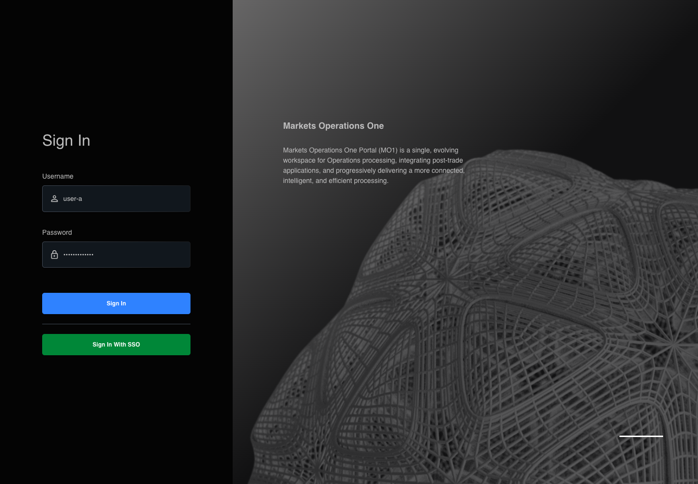

AUTH-024 actual React canonical steps
PASS · application/run-050/auth-024-actual-react-canonical-steps-4ce986f49f37-attempt-1 · ACTUAL_APPLICATION_LOCAL_SERVICES
Actual MFE React; controlled login API responses; hostname proxy preserves source environment decisions. No real identity or deployment acceptance.
2026-10-22T06:09:31.457Z to 2026-10-22T06:09:35.242Z
Assertions and result · Artifact manifest · Exact run inputs and source hashes
Result SHA-256:4062bf6c493e8e600b78dda4c879f7cd4e513f61047d1cd7f1a8e8bc3bb9f369Machine observations
- controlled-service.json
cbe46e33500fa0d3741504defc7c8d2fe7b8be7a8e9542e24eff7c9614d39f72 - initial-context.json
4773dec7452873f26b66fcc9f29699b2520c0bdea12b2179b1ac14eff0409278
Screenshot capture: CAPTURED. Named frames: 9.
Step screenshot bindings: COMPLETE. 8/8 canonical steps have execution screenshots.
Bindings measure structural coverage only. They do not establish screenshot content quality or relevance.
Screenshot content review: NOT_REVIEWED. Recorded context: 0/9 frames. Identical image bytes: 4 repeated frames. Recorded context does not establish human visual review.
Canonical step timeline
Given User A is an entitled fixture user in an isolated browser context with empty browser storage
Execution: PASSED.
1. step-01 Visible state after step 1: Given User A is an entitled fixture user in an isolated browser context with empty browser storage
2026-10-22T06:09:31.685Z · 1440×1000
Step: /Users/lushevol/code/github/ratan-release-impact/workbench/tasks/ui-test-coverage-20261022/test-cases.md:1011
SHA-256:cb9c3b8047859412e8abcaed51ad9ecefb4bd820c8849af4992e593d500d1836And the LOCAL login page is visible; the credential service accepts user-a / FixturePass1!; the credential POST response remains pending
Execution: PASSED.
2. step-02 Visible state after step 2: And the LOCAL login page is visible; the credential service accepts user-a / FixturePass1!; the credential POST response remains pending
2026-10-22T06:09:32.686Z · 1440×1000
Step: /Users/lushevol/code/github/ratan-release-impact/workbench/tasks/ui-test-coverage-20261022/test-cases.md:1012
SHA-256:664babd84ff6d7926ad8e99d7a4bbde727c1a202e01dd31a587c9d3836eefb38When User A enters "user-a" into the textbox with placeholder "Enter Username" on the login page
Execution: PASSED.
3. step-03 Visible state after step 3: When User A enters "user-a" into the textbox with placeholder "Enter Username" on the login page
2026-10-22T06:09:32.939Z · 1440×1000
Step: /Users/lushevol/code/github/ratan-release-impact/workbench/tasks/ui-test-coverage-20261022/test-cases.md:1013
SHA-256:ef27de9dae5b857aa7028ff3b8e4dbc09734687b02ca43a5e85a6d80e2774d08And User A enters "FixturePass1!" into the text input with placeholder "Enter Password" on the login page
Execution: PASSED.
4. step-04 Visible state after step 4: And User A enters "FixturePass1!" into the text input with placeholder "Enter Password" on the login page
2026-10-22T06:09:33.156Z · 1440×1000
Step: /Users/lushevol/code/github/ratan-release-impact/workbench/tasks/ui-test-coverage-20261022/test-cases.md:1014
SHA-256:1841c0b1d05bb88ca4d78efbcbfd3d7d10acb885e3b9d8e9891bbe7a2a206ed4And User A clicks the button labelled "Sign In" on the login page
Execution: PASSED.
5. step-05 Visible state after step 5: And User A clicks the button labelled "Sign In" on the login page
2026-10-22T06:09:33.478Z · 1440×1000
Step: /Users/lushevol/code/github/ratan-release-impact/workbench/tasks/ui-test-coverage-20261022/test-cases.md:1015
SHA-256:834edf00a4e74948d02ebe5360efe703449a572b5fda342849556a7ab9e5b495Then the button labelled "Sign In" on the login page is disabled
Execution: PASSED.
6. step-06 Visible state after step 6: Then the button labelled "Sign In" on the login page is disabled
2026-10-22T06:09:33.689Z · 1440×1000
Step: /Users/lushevol/code/github/ratan-release-impact/workbench/tasks/ui-test-coverage-20261022/test-cases.md:1016
SHA-256:834edf00a4e74948d02ebe5360efe703449a572b5fda342849556a7ab9e5b495Image bytes match frame 5. An unchanged image can be valid for consecutive assertions. This match does not establish correct step content.
And the button labelled "Sign In" on the login page contains one progress indicator
Execution: PASSED.
7. step-07 Visible state after step 7: And the button labelled "Sign In" on the login page contains one progress indicator
2026-10-22T06:09:33.897Z · 1440×1000
Step: /Users/lushevol/code/github/ratan-release-impact/workbench/tasks/ui-test-coverage-20261022/test-cases.md:1017
SHA-256:834edf00a4e74948d02ebe5360efe703449a572b5fda342849556a7ab9e5b495Image bytes match frame 6. An unchanged image can be valid for consecutive assertions. This match does not establish correct step content.
And the link labelled "Sign In With SSO" on the login page has disabled interaction state
Execution: PASSED.
8. step-08 Visible state after step 8: And the link labelled "Sign In With SSO" on the login page has disabled interaction state
2026-10-22T06:09:34.144Z · 1440×1000
Step: /Users/lushevol/code/github/ratan-release-impact/workbench/tasks/ui-test-coverage-20261022/test-cases.md:1018
SHA-256:834edf00a4e74948d02ebe5360efe703449a572b5fda342849556a7ab9e5b495Image bytes match frame 7. An unchanged image can be valid for consecutive assertions. This match does not establish correct step content.
Additional named frames

The final visible state after the named test assertions.
2026-10-22T06:09:34.579Z · 1440×1000Step: Test source: /Users/lushevol/code/github/ratan-release-impact/workbench/e2e/audit-specs/login-environment.spec.ts:9
SHA-256:
834edf00a4e74948d02ebe5360efe703449a572b5fda342849556a7ab9e5b495Image bytes match frame 8. An unchanged image can be valid for consecutive assertions. This match does not establish correct step content.
Screenshots establish visible state only. Assertions and traces support functional claims.